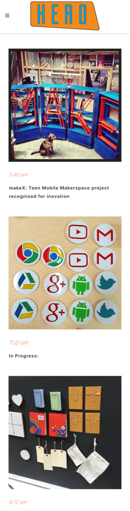

Hero Design
https://hero-design.com/

This design was awarded thanks to the alignment that existed in its design, which represented the services offered through illustrations, graphic design, audiovisual production and 3D modeling. It is also important to highlight the colors that perfectly contrast the background with the text, this allows easy reading of the headline and finding the menu from the face. Another aspect to highlight of this web page is that it only uses a landing page to show all the information, the products or services to highlight and even the contact.